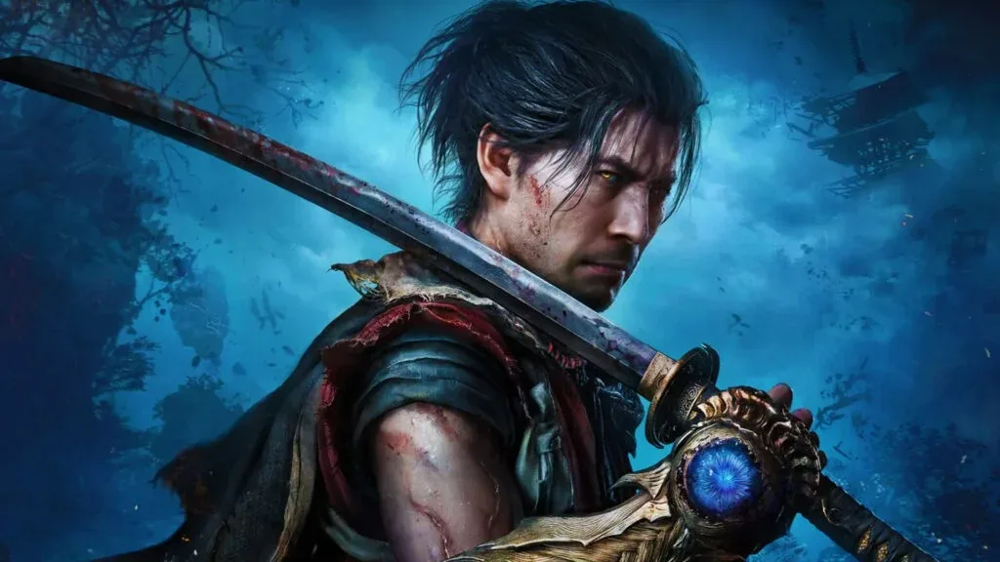

Luiso · 7 de septiembre de 2026
Capcom volvió a demostrar que sus franquicias clásicas todavía tienen un enorme potencial comercial. Onimusha: Way of the Sword superó el millón de unidades vendidas en todo el mundo durante su primer día, según confirmó oficialmente la compañía.
El resultado representa un comienzo especialmente fuerte para una franquicia que llevaba dos décadas sin recibir una nueva entrega principal. Way of the Sword llegó al mercado el 4 de septiembre y recuperó la serie con una propuesta de acción centrada en los combates con espada y ambientada en un Japón feudal plagado de amenazas sobrenaturales.
El nuevo título está protagonizado por Miyamoto Musashi, interpretado visualmente a partir de la imagen del legendario actor japonés Toshiro Mifune. La aventura combina enfrentamientos de acción, parrys y contraataques con elementos característicos de la franquicia, todo desarrollado utilizando el RE Engine de Capcom.
El lanzamiento de Way of the Sword no solamente consiguió un buen resultado individual. La franquicia Onimusha superó las 10 millones de unidades vendidas en total, impulsada por las ventas del nuevo juego.
Antes del lanzamiento, la saga acumulaba aproximadamente nueve millones de copias comercializadas. Con este nuevo título, Capcom consiguió superar una barrera histórica para una franquicia que había permanecido prácticamente inactiva durante años.
El dato también resulta significativo porque Onimusha nunca alcanzó el nivel comercial de las principales franquicias actuales de Capcom, como Resident Evil, Monster Hunter o Street Fighter. Sin embargo, el rendimiento de Way of the Sword demuestra que existe interés por recuperar propiedades intelectuales que llevaban años fuera del mercado.
El lanzamiento de Onimusha: Way of the Sword se suma a un 2026 particularmente positivo para Capcom. La compañía ya había conseguido importantes resultados con Resident Evil Requiem y Pragmata, consolidando una racha de lanzamientos exitosos durante el año.
El rendimiento inicial de Onimusha también podría reforzar la estrategia de Capcom de recuperar franquicias antiguas y darles una nueva oportunidad con producciones modernas.
La compañía ya había comenzado a explorar ese camino con las remasterizaciones de Onimusha: Warlords y Onimusha 2: Samurai's Destiny, lanzadas en 2018 y 2025 respectivamente. Ahora, Way of the Sword representa el verdadero regreso de la serie con una nueva entrega.
Con más de un millón de copias vendidas en apenas 24 horas, el regreso de Onimusha ya puede considerarse otro importante éxito comercial para Capcom. Queda por ver hasta dónde podrá llegar el juego durante las próximas semanas y si sus resultados serán suficientes para impulsar nuevas entregas de la franquicia.